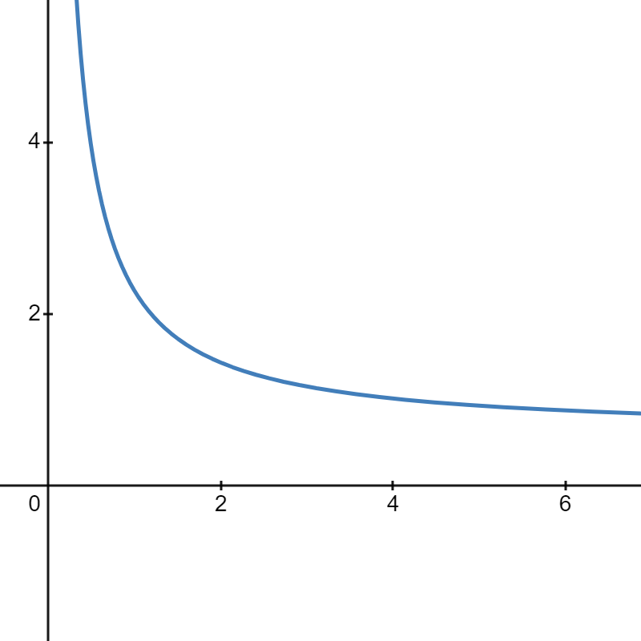
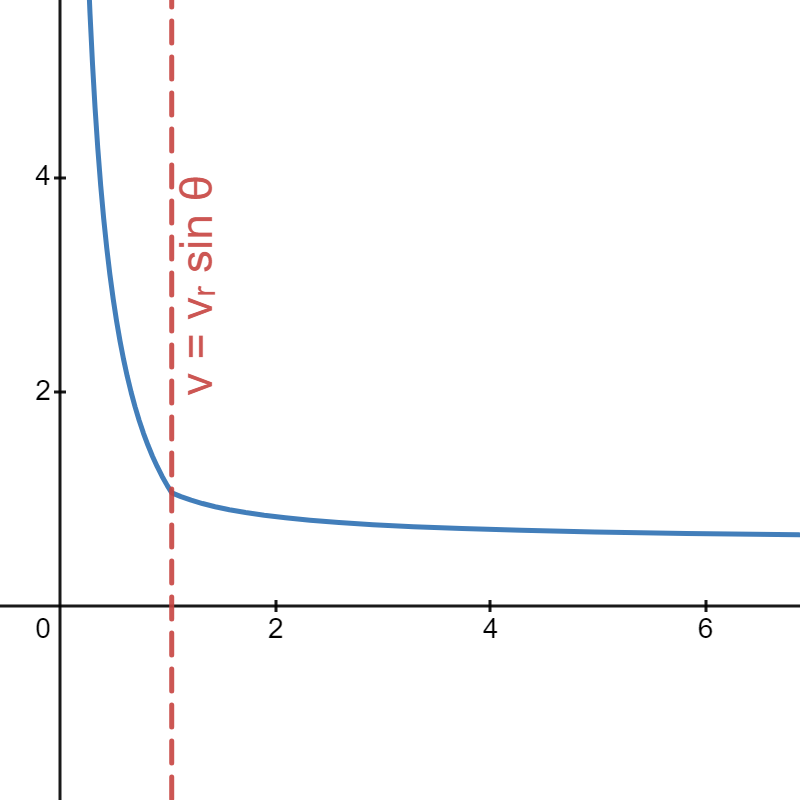
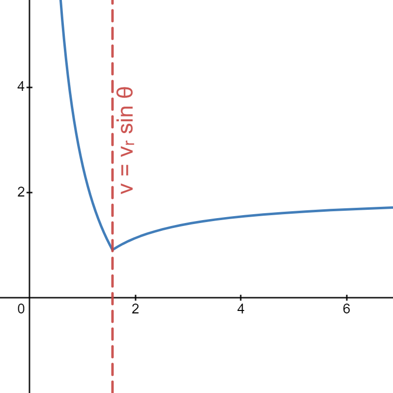
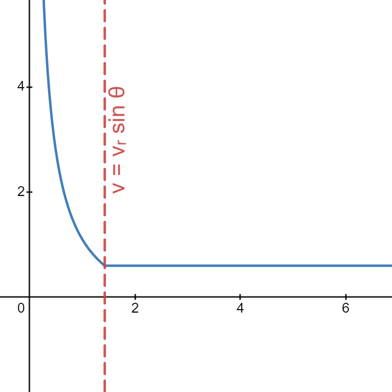

Like seriously, do you get wetter by running faster or slower in the rain?
On one hand, going slowly means you spend more time in the rain. On the other hand how does your velocity affect the amount of falling rain you run into horizontally?
Obviously, there's a limit to how fast you can run, and you're likely slip in a puddle and defeat the whole purpose of getting wet. But this is a theorical problem, and in the name of way overthinking things, let's find out!
________
I'm sorry, what?
Okay, so what do we precisely mean by the question?
Let's use a 2-D world just to simplify the math and simulation. Our body will be a rectangle of width \( w \) and height \( h \). We'll express the density of rain in the air as \( \sigma \). This could represent the discrete number of drops of rain or some continuous measure of volume or mass. Regardless, it's just some amount of water per unit area. Then we have the velocity \( v_r \) of the rain falling straight down and the distance \( D \) that we have to travel. We want to find the optimal running velocity \( v \) to minimize the amount of rain \( R \) we hit. Conventional signs with positive being to the right will be used.
Here's a little simulation of all that in action:
SIM
You might have noticed something interesting: the rate that rain that hits us vertically remains constant, and running forward causes us to run into the same "area" of rain. This means that solution to our problem is completely trivial, as we'll always run into the same amount of rain horizontally regardless of our velocity, meaning only the vertical component matters. With a constant vertical rate, we want to minimize the time spent running, and that just results in running as fast as possible.
But with rain comes the wind! On a windy day, the rain falls at an angle. We'll call \( \theta \) the angle of rainfall relative to the vector normal to the ground pointing straight down, with positive as counter-clockwise (the same direction as our velocity) and vice versa for negative. Note that we'll restrict the domain of \( \theta \) to \( [-\frac{\pi}{2},\frac{\pi}{2}] \), the range where the rain still falls downward.
But why should this change with an angled rainfall?We can think of the extreme case where \( theta = \frac{\pi}{2} \), or going straight to the right. If we were to go exactly at the speed of the rain, we'd never actually hit any rain as we travel along with it. It's sort of like being in the eye of a hurricane, where going at the exact same speed as the cyclone with keep you out of the storm, but any faster or slower and you'll we swept up.
Let's update our simulation to reflect that:
SIM
________
(Rain)dropping Down some Equations
The math is pretty interesting in my opinion and involves some calculus, but nothing you can't find in any Calculus I course. The math isn't necessarily fundamental to the solution though, so feel free to skip the math and look at the graphs, full simulation and results here.
Very generally we can get the amount of rain we hit per second by taking the "area of rain" we run through every second and multiplying by the rainfall density. For us, we can get the area per second by multiplying the length of the edge colliding with the rain and multiply that by the velocity of that rain relative to the surface.
First, let's take a look at the vertical component, falling down on our top edge. The edge length is \( w \) and the velocity of the rain falling downward, with a bit of trigonometry, is \( v_r cos \theta \).
IMAGE OF TRIG
Mutiplying this rate by the amount of time gives us to total amount of rainfall we collide with vertically:
\[ v_r = \sigma w v_r t \cos \theta \]
But where's velocity? \( t \) is a function of \( v \) as changing the velocity changes the amount of time needed to travel that set distance. Using the substitution \( t = \frac{D}{v} \) gets us a function for the amount of rain in terms of velocity:
\[ v_r(v) = \frac{\sigma w v_r D \cos \theta}{v} \]
As a quick gut check, it makes sense that as we increase the density, width, rainfall velocity, or distance ran, we should be wetter. And just as we found before, it's inversely proportional to our own velocity, decreasing wetness as we run faster.
Next we have the horizontal component, which is a little more complicated. Let's first look at the case where the the angle is just straight down (\( \theta = 0\)). The edge is \( h \) and the velocity is entirely determined by how fast we run \( v \). We can apply the same logic as before:
\[ R_h(v) = \sigma h v t = \frac{\sigma h v D}{v} = \sigma h D \]
Again, it should make sense that when the rain falls straight down, the wetness is constant, as you're still going through the same area regardless of velocity.
When we start angling the rain, instead of just \( v \), we need to compare it relatively to the horizontal velocity of the rain. That would mean \( v - v_r \sin \theta \). If the rain is travelling hornizontally faster than us though (\( v_r \sin \theta > v \)), this would make our term negative. That doesn't really make sense, as rain hitting us is still positive wetness regardless of which side we get hit. Therefore, we'll wrap an abolsute value around this velocity to make it always positive. Updating our new relative velocity term, we get:
\[ R_h(v) = \sigma h t \lvert v - v_r \sin \theta \rvert = \frac{ \sigma h D \lvert v - v_r \sin \theta \rvert }{v} \]
Note that the order of the terms in the abolute value doesnt matter as it will become positive regardless/ \( \lvert v - v_r \sin \theta \rvert \) could just as easily be \( \lvert v_r \sin \theta - v \rvert \).
Combining these two equations gets us this beast of a function:
\[ R(v) = \frac{\sigma w v_r D \cos \theta}{v} + \frac{ \sigma h D \lvert v - v_r \sin \theta \rvert }{v} \]
There's plenty of simplification to do, but importantly, we'll be splitting up the absolute value function into its piecewise definition to ease later analysis:
\[ \begin{aligned} R(v) & = \frac{\sigma w v_r D \cos \theta}{v} + \frac{ \sigma h D \lvert v - v_r \sin \theta \rvert }{v} \\\\ & = \begin{cases} \frac{\sigma w v_r D \cos \theta}{v} - \frac{ \sigma h D \left( v - v_r \sin \theta \right) }{v}, & \text{if } 0 < v < v_r \sin \theta \\ \frac{\sigma w v_r D \cos \theta}{v} + \frac{ \sigma h D \left( v - v_r \sin \theta \right) }{v}, & \text{if } v \geq v_r \sin \theta \end{cases} \\\\ & = \begin{cases} \frac{\sigma w v_r D \cos \theta}{v} - \sigma h D + \frac{ \sigma h D \sin \theta }{v}, & \text{if } 0 < v < v_r \sin \theta \\ \frac{\sigma w v_r D \cos \theta}{v} + \sigma h D - \frac{ \sigma h D \sin \theta }{v}, & \text{if } v \geq v_r \sin \theta \end{cases} \\\\ & = \begin{cases} \frac{\sigma D v_r}{v} \left( w \cos \theta + h \sin \theta \right) - \sigma D h, & \text{if } 0 < v < v_r \sin \theta \\ \frac{\sigma D v_r}{v} \left( w \cos \theta - h \sin \theta \right) + \sigma D h, & \text{if } v \geq v_r \sin \theta \end{cases} \\\\ \end{aligned} \]
Notice that we've restricted the domain of velocity to the positive numbers to avoid negative and undefined time.
Go back to the conditions we set for the piecewise. What happens when \( v_r \sin \theta < 0 \), equivalent to when \( \theta < 0 \)? Then the inequality doesn't make sense. In that case, only the right piece is even expressed at all. We can rewrite our equation more precisely then as:
\[ R'(v) = \begin{cases} \frac{\sigma D v_r}{v} \left( w \cos \theta + h \sin \theta \right) - \sigma D h, & \text{if } \theta \geq 0, 0 < v < v_r \sin \theta \\ \frac{\sigma D v_r}{v} \left( w \cos \theta - h \sin \theta \right) + \sigma D h, & \text{if } \theta \geq 0, v \geq v_r \sin \theta \\ \frac{\sigma D v_r}{v} \left( w \cos \theta - h \sin \theta \right) + \sigma D h, & \text{if } \theta < 0, v > 0 \end{cases} \]
Okay, the equation looks like a mess and it's hard to dispute that it isnt. While it may look like a lot of symbols, just remember, that every one of them except \( v \) is just a constant, and each piece is just a relatively simple rational expression.The conditions look like some weird multivariable mess, the one that involves \( \theta \) you can think of as different cases for when the constant angle is positive or negative, and only the \( v \) part acts as the domains of each piece.
________
Slippery, Slippery Slopes
If you have an aversion to math, now's your last chance to move on! This section will be focusing on finding the solution analytically, and the following section will look into the graphs. Depending on your preferences, it may be more intuitive to take a look at those graphs before returning to this section or just skip this section altogether.
First, note that \( R(v) \) is continuous over our interval \( \left( 0, \infty \right) \). Each piece of our function is essentially a rational function disconinuous at \( v = 0 \), which is outside the domain of \( v \). When \( \theta \geq 0 \), at \( v = v_r \sin \theta \) where the two pieces meet, evaluating the limit on either side yields the same \( \sigma D w \cot \theta \), which you could do yourself if you wanted to.
Finding the minimum of the function involves analyzing the sign of the derivative. This is why we split up the absolute value earlier, allowing us to just use the power rule on each piece, treating all other variables as constants.
\[ R'(v) = \begin{cases} -\frac{\sigma D v_r}{v^2} \left( w \cos \theta + h \sin \theta \right), & \text{if } \theta \geq 0, 0 < v < v_r \sin \theta \\ -\frac{\sigma D v_r}{v^2} \left( w \cos \theta - h \sin \theta \right), & \text{if } \theta \geq 0, v > v_r \sin \theta \\ -\frac{\sigma D v_r}{v^2} \left( w \cos \theta - h \sin \theta \right), & \text{if } \theta < 0, v > 0 \end{cases} \]
Let's first look at the case where \( \theta < 0 \), aka the bottom-most expression. \(\sigma\), \(D\), \(v_r\), and \(v^2\) must all be positive (assuming of course that \(v\) is not a complex number, which would quite turn the tables). As for \( \left( w \cos \theta - h \sin \theta \right) \), we know that \(w\) and \(h\) are both positive. Since the angle is restricted to negative numbers, we can cut its domain to \( \left[ -\frac{\pi}{2}, 0 \right) \), just the fourth quadrant. Cosine is always positive in the fourth quadrant while sine is always negative, meaning that \( \left( w \cos \theta - h \sin \theta \right) \) will always be positive. Tacking on the negative sign, we find that when \( \theta < 0 \), \(R'(v)\) is always negative.
Well what can we gain from that? If the derivative is always negative, then the \(R(v)\) is monotonically (always) decreasing on its entire domain, meaning the lowest point is necessarily at \( v = \infty \). In essence, if the rain is angled against the direction of your, just run as fast as possible to get the least wet!
When \( \theta \geq 0 \), we need to break out the piecewise party! We can restrict the domain of \(\theta\) to \( \left[ 0, \frac{\pi}{2} \right] \), or the first quadrant, where both sine and cosine are positive. The same logic as before applies to all the constants.
In the left piece at the top where \( v < v_r \sin \theta \), \(\left( w \cos \theta + h \sin \theta \right)\) will always be positive as both sine and cosine are positive; therefore, \(R'(v)\) is negative, showing that over the left half, the right-most point \( v = v_r \sin \theta\) is the minimum.
The right piece in the middle where \( v \geq v_r \sin \theta \) is more complicated, as the sine and cosine term don't work in the same direction. At \( \theta = 0 \), the \(\left( w \cos \theta - h \sin \theta \right)\) reduces to \( w \cos 0 = w \), a positive value, while at \( \theta = \frac{\pi}{2} \), the expression reduces to \(\left( - h \sin \frac{\pi}{2} \right) = -h \), a negative value. Sine and cosine are both continuous, so the Intermediate Value Theorem guarantees that the expression crosses 0 from positive to negative at some point. Solving for when it crosses 0:
\[ \begin{aligned} 0 & = w \cos \theta - h \sin \theta \\\\ h \sin \theta & = w \cos \theta \\\\ \frac{\sin \theta}{\cos \theta} = \tan \theta & = \frac{w}{h} \\\\ \theta & = \tan^{-1} \frac{w}{h} \end{aligned} \]
Just to confirm that this makes sense, \(\frac{w}{h}\) is positive, so \(\theta\) would land in the first quadrant like we expect based on the range of arctangent.
Going back, \(\left( w \cos \theta - h \sin \theta \right)\) is therefore positive for \(\theta\) on \( \left[ 0, \tan^{-1} \frac{w}{h} \right) \), negative on \( \left( \tan^{-1} \frac{w}{h}, \frac{\pi}{2} \right) \), and exactly zero when \( \theta = \tan^{-1} \frac{w}{h} \). Taking into account the negative sign, we have to invert them to get the sign of \(R'(v)\).
Wrapping it all up for positive rainfall angles, when \(\theta < \tan^{-1} \frac{w}{h} \), \(R'(v)\) is entirely negative, setting a minimum for \(R(v)\) at infinity, just like when \(\theta\) was negative. When \(\theta > \tan^{-1} \frac{w}{h} \), \(R'(v)\) is negative to the left of \(v_r \sin \theta \) and positive to the right, setting a mininum at \( v = v_r \sin \theta \). On the very small offchance where \( \theta = \tan^{-1} \frac{w}{h} \), \(R'(v)\) is completely flat to the right of \(v_r \sin \theta \), meaning any running velocity faster than \(v_r \sin \theta \) will be the minumum.
To summarize, here are the optimal running velocities given different conditions:
\[ \begin{aligned} & \text{If } \theta < \tan^{-1} \frac{w}{h}, \text{ run as fast as you can.} \\\\ & \text{If } \theta > \tan^{-1} \frac{w}{h}, \text{ run at the velocity } v_r \sin \theta. \\\\ & \text{If } \theta = \tan^{-1} \frac{w}{h}, \text{ run at any velocity} \geq v_r \sin \theta. \end{aligned} \]
Notably, only our dimensions and the angle and velocity of rainfall are important to determining optimal running speed, and the rain density and travel distance have no bearing. On second thought, that actually makes sense.
Now we could actually calculate how wet we'd be, but to be honest, I've done enough calculus and algebra to want to burn all my old AP Calculus FRQs at this point (at least more than I wanted to before). You can just plug in numbers to find those if you're interested. Instead, let's take a look at what those graphs look like and actually begin dragging around some sliders!
________
Graphs Rain Supreme
We've mathmatically explored the question to arrive at a solution, but what does it actually look like? Earlier, we derived an equation for wetness as a function of veocity:
\[ \begin{aligned} R(v) & = \frac{\sigma w v_r D \cos \theta}{v} + \frac{ \sigma h D \lvert v - v_r \sin \theta \rvert }{v} \\\\ & = \begin{cases} \frac{\sigma D v_r}{v} \left( w \cos \theta + h \sin \theta \right) - \sigma D h, & \text{if } \theta \geq 0, 0 < v < v_r \sin \theta \\ \frac{\sigma D v_r}{v} \left( w \cos \theta - h \sin \theta \right) + \sigma D h, & \text{if } \theta \geq 0, v \geq v_r \sin \theta \\ \frac{\sigma D v_r}{v} \left( w \cos \theta - h \sin \theta \right) + \sigma D h, & \text{if } \theta < 0, v > 0 \end{cases} \end{aligned}\]
Here's what the graph of that function looks like. Play around with the different sliders to see their effect on the minimum velocity or wetness.
What do you think of it? You might notice that most of the time, the function is composed of two joined rational curves joined at a corner. There are 3 main cases and an additional "improbable" fourth one:
|  Case 1: \( -\frac{\pi}{2} \leq \theta \leq 0 \) |  Case 2: \( 0 < \theta < \tan^{-1} \frac{w}{h} \) |  Case 3: \( \tan^{-1} \frac{w}{h} < \theta \leq \frac{\pi}{2} \) |  Case 4: \( \theta = \tan^{-1} \frac{w}{h} \) |
In the first case. the rain is going straight down or against the direction of travel. We can see the function is always decreasing, so it would be advantageous to run as fast as possible.
In the second and third, the rain is going in the same direction of travel. There's a pivotal point at \( \theta = \tan^{-1} \frac{w}{h} \). When the angle is less than this value, it's still better to run as fast as possible, but at angles greater, the optimal point becomes the vertex at \( v = v_r \sin \theta \). In the very specific case where the angle is exactly at that pivotal point, the slope is flat afterwards, making any velocity beyond the vertex optimal.
What's so special about these specific values though?
With \( v = v_r \sin \theta \), it's simply the horizontal speed of the rain. Similarly to the hurricane analogy, running at the same horizontal speed of the rain allows us to run with the wind and actually avoid getting wet from the sides.
For \( \theta = \tan^{-1} \frac{w}{h} \), some trigonometry shows us that that angle is the angle of our diagonal across the rectangle. Case 2 and Case 3 thus essentially depend on whether the rainfall angle is shallower or steeper than us.
RAIN
One way to think of it is that when the rain is steeper ( \( \theta \) is small), the the vertical component hitting the \( w \) of the rectangle outweighs the horizontal component, but when the rain is shallower ( \( \theta \) is small), the opposite is true.
________
Percipitation Simulation Humiliation
Here's a simulation to show it all fitting together. The "Animation" tab shows an animation of individual runs, while the "Statistics" tab runs through hundreds of simulations to greate an experimental graph. How well do they align with our theoretical graphs?
Go wild!
SIM
________
A little Conlusion
Hopefully you've found this problem as interesting as I have! Or at least indulged in my ranting. I tried to give the math sections a rigorous numerical analysis of the problem while the graphical section has given a visual intuition for the problem.
As you most assuredly alreaday know though, it's not very useful information. "Running as fast as possible" is never a good idea when it's raining, and any time spent out with a protractor measuring the angle of the rain is time much better spent getting out of it. I like to think it's still a fun thought excersise!